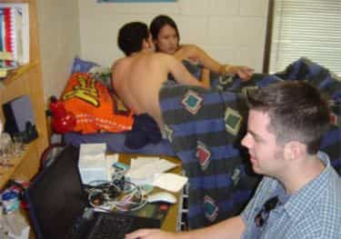

< < < Back
The 5 Most Common Types of Cockblockers – Return Of Kings
We’ve talked about how the deck is stacked against men getting laid by a prevailing culture of cockblocking—people and institutions working behind the scenes to prevent you from getting trim. But, there’s very little you and I can do about that. What’s more, on a day-to-day basis, we’re more likely to face the more visible types of cockblocker: actual people who do things to your face—intentionally or not—to salt your game, and in the process, scare off your prospect, extinguish your hard-earned rapport, or rattle you enough that you drop the ball.
With social ineptitude and obesity at all-time highs—the root causes of the resentment, frustration, and jealousy behind most cockblocking—the number of cockblockers are also higher than ever. With the further multiplier effect of the Internet, you really are beset on all sides.
That said, not all hope is lost. Cockblockers still break down into the same traditional taxonomies. Some are in-house (your own “friends”), others are external (her friends), and still others are environmental (strangers). And, even if you don’t have a competent wing man (an increasingly rare species) to help distract or usher your game killer, there are still ways to handle the most common types.
The Hoverer
This is often a guy in your party, even a friend. Too afraid, or incapable, of entering the conversation you started, he will instead loom at an awkward distance, making your girls uncomfortable. Even when you try to include him in the conversation, his contributions are negative, at best, further hurting your chances.
Best Response: Box them out. Physically cut them out of the conversation in a gradual way, turning your back on them or wedging them with your hip or elbow. Ideally, you should re-position your girl’s field of vision away from him.

The Crab-in-the-Bucket
This is the most dangerous in-house obstacle you can have, yet every guy seems to know at least one “friend” like this. This is a guy who climbs over you to try to get to the girl you’re talking to, pulling you both down in the process. He’s either a shitty wing man, who refuses to follow the guy-who-opens-gets-first-pick rule or a guy who wanders around “looking for his buddies,” but is really just looking to poach pre-approached girls. He makes jokes at your expense, in a lame attempt to ingratiate himself with your girl. To make matters worse, he rarely has good game, so he further discredits you by your being associated with such a lame-ass dude who doesn’t respect you.
Best Response: Stop going out with him or cut him out of your group entirely. I’ve not once succeeded in reforming one of these assholes. In order to do so, you basically have to teach these guys game from Square 1, which they’ll never learn because they obviously can’t or won’t. They see themselves as entitled to your prospects, actually believing the girl is fair game unless you’re actively penetrating them. Move on.
The Wrist Grabber
The classic cockblock move that remains as effective as it is simple. She drops in deus ex machina and extracts—often physically—your prospect from the conversation. The excuses range from a rushed, ambiguous “we have to go” to a more elaborate “we’re meeting ‘our friend.’” They’ll often fool less experienced players with the promise of going to the bathroom and coming “right back.” The goal is to “rescue” your girl whether or not she actually wants to be rescued.
Best Response: As much as you want to dress down or physically harm the wrist grabber, your best bet is to swallow your rage and ask her for “a couple of minutes” in a manly, but friendly, manner. While the angriest fatties will respond to this polite request with rudeness—granting you license to escalate to an old-school call-out—some will either leave you alone or linger in the conversation, enabling you to rap to them both. You can then bounce them over to the dance floor, get a solid phone number, or a sufficient amount of the friend’s approval to break loose entirely.

The Snarky Color Commentator
This is often a problem in group settings where you’re outnumbered by her friends. You’ve successfully entered their group and captured everyone’s attention with your scintillating observational humor. But this girl, often on the uglier and fatter side, is accustomed to getting the laughs and loud-mouth attention in this hen house. She will compete with you for the group’s attention, interrupting you with bitchy remarks, resorting to inside jokes in an effort to exclude you, or lob thinly veiled insults at you in a passive-aggressive tone.
Best Response: Include the snarky friend in the conversation, but steer her away from her lame attempts at humor. Ask her and the group questions about unrelated matters. Take the first opportunity for a side conversation with your prospect as soon as there’s any fragmentation in the group conversation. If that doesn’t happen, “borrow” the friend for a “few minutes.”
The Curtain Puller
This is one of your more hostile types. This is a sideline observer—often one of your target’s friends, but not necessarily—who’s taken up the mission of “exposing” that you’re hitting on your target. She will say rude shit like “Is that your line?” or “Do you always hit on girls here?” in an effort to rattle you and “warn” your “innocent” would-be “victim” that you have intentions. Given that you’ve done this before, you’re not phased by being outed, just likely irritated. More importantly, it may embarrass your target and ruin the interaction.
Best Response: Restraint in your best friend. While you’ll be tempted to verbally slap down the curtain puller, that’s what she wants. Like Emperor Palpatine, you’ll only make her stronger by striking her down. Roll with the exposure. Do some behind-the-scenes narrative about what you’re doing and why you’re hitting on this girl, all in your best cheeky tone. “Hell yeah, that’s my line. Your friend looks like the type who likes sandwiches, so I’m building rapport by telling her about my impressive sandwich-making abilities. After this, I plan on asking some questions about that interesting bracelet there. Are you going to give me a chance to finish my presentation?”
Cockblocking is a reality of masculine life, one that’s especially pronounced in nightlife game. More times than not, a determined cockblocker will be successful. Five minutes of rapport with a complete stranger is so fragile that it takes very little to shatter it. But, with a little restraint and some tact, you can deflect a lot of cockblock attempts and salvage your interactions.
Read More: The Holidays: Amateur Nights On Steroids


{kind=link}
{kind=link}